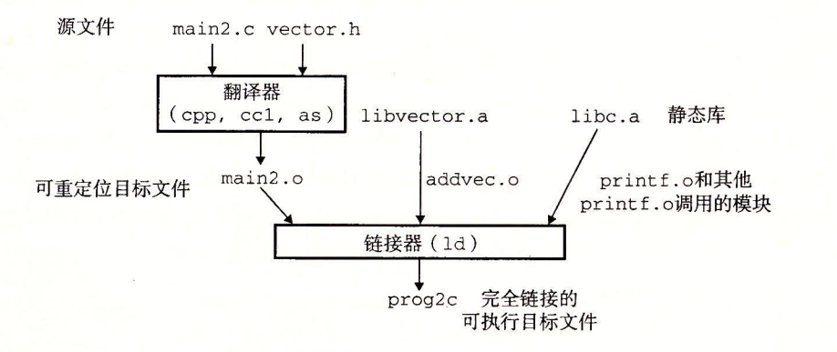

对于一个程序员而言，不仅仅要知道代码是怎么写的，还得知道你的源代码文件是怎么经过一系列操作变成可执行文件的。
参考神书《CSAPP》
#整体流程
本文将以以下程序为基础进行分析。
main.c#include <stdio.h> int sum(int *a, int n); int array[2] = {1, 2}; int main() { int val = sum(array, 2); return 0; }
sum.cint sum(int *a, int n) { int i, s = 0; for (i = 0; i < n; i++) { s += a[i]; } return s; }
这个示例程序由两个源文件组成，main.c 和 sum.c。
main() 初始化一个整数数组，然后调用 sum() 来对数组元素求和。如果要用 GNU 编译系统构造示例程序，我们就要通过在 shell 中输入下列命令来调用 GCC 驱动程序：
$ gcc main.c sum.c -o prog在 Unix 系统上，从源文件到目标文件的转化是由编译器驱动程序完成的。编译器驱动程序读取源程序文件 .c，并把它翻译成一个可执行目标文件 .exe。这个翻译过程分为四个阶段：预处理(Preprocessing)、编译(Compilation)、汇编(Assembly)、链接(Linking)（如下图所示）。执行这四个阶段的程序(预处理器、编译器、汇编器、链接器)一起构成了编译系统。
通常，前三个阶段都会直接合并到一起，也就是直接从源文件生成目标文件。
#预处理阶段
预处理器(cpp)处理所有的以 # 起始的预编译指令，比如
-
将宏定义
#define出现的所有位置进行文本替换； -
处理所有条件预编译指令如
#ifdef、#endif； -
将
#include的文件直接插入到预编译指令的位置； -
删除所有的注释；
-
添加行号和文件标识，以便编译时产生调试用的行号及编译错误警告行号；
-
保留所有的
#pragma编译器指令，因为编译器需要使用它们；
通过运行
gcc -E ??.c -o ??.i命令来进行预处理，我们将得到一个.i结尾的预处理文件。
#编译阶段
编译器(ccl)将预处理完的文本文件 .i 进行处理，检查语法规范性（包括词法分析、语法分析、语义分析），并进行一定优化，最后生成一个由汇编语言进行描述的文件 .s。
通过运行
gcc -S ??.i -o ??.s命令来进行预处理，我们将得到一个.s结尾的汇编文件。
#汇编阶段
汇编器(as)把编译阶段生成的 .s 文件转化成目标文件 .o。从文件结构上来讲，目标文件已经是二进制文件，本身就是按照可执行文件格式存储的，只是有些变量和函数的地址还未确定，且各 .o 文件地址空间相互独立（从地址 0x0 开始生成代码和数据节），程序还不能执行，需要依靠下一步的链接来找到这些变量和函数的地址并进行重定位。
通过运行
gcc -c ??.s -o ??.o命令来进行预处理，我们将得到一个.o结尾的目标文件。
#可执行文件格式 ELF
以 Linux 为例，其可执行文件的格式为 ELF(Executable Linkable Format)，即可执行可链接格式。
Linux 将采用的 ELF 格式的文件分为四类，分别是：
-
可重定位文件(Relocatable File)：如
.o； -
可执行文件(Executable File)：如
.exe； -
共享目标文件(Shared Object File)：如
.so； -
核心转储文件(Core Dump File)：当进程意外终止时，系统可以将该进程的地址空间的内容及终止时的一些其它信息转储到核心转储文件，如
core dump。
Linux下使用 file 命令可以查看相应的文件格式：
file test.o
#可重定位文件
下图就是一个经典的 ELF 可重定位目标文件格式
#ELF Header
**ELF 头(ELF Header)**描述了一些目标文件的信息，包括 ELF 头的大小、目标文件类型、机器类型、节头部表的文件偏移，以及节头部表项的大小和数量。
#Sections
接下来一直到节头表之前就是若干**节(Section)**了。一般都有以下这些节：
-
.text：代码节，即已编译程序的指令码； -
.rodata：只读数据节，比如常量； -
.data：存放已初始化的全局变量和静态变量； -
.bss：存放未初始化全局变量和静态变量； -
.symtab：符号表，它存放在程序中定义和引用的函数和全局变量的信息。它不包含对应于 non-static 局部变量的任何符号，因为这些符号在运行时在栈中被管理，链接器对此类符号不感兴趣；一些程序员错误地认为必须通过
-g选项来编译一个程序，才能得到符号表信息。实际上，每个可重定位目标文件在.symtab中都有一张符号表（除非程序员特意用STRIP命令去掉它）。然而，和编译器中的符号表不同，.symtab符号表不包含局部变量的条目。 -
.rel.text：描述.text节中需重定位的符号位置信息； -
.rel.data：描述.data节中需重定位的符号位置信息； -
.debug：调试用符号表，其条目是程序中定义的局部变量和类型定义，程序中定义和引用的全局变量，以及源文件； -
.line：源文件中的行号和.text节中机器指令之间的映射； -
.strtab：字符串表，其内容包括.symtab和.debug节中的符号名，以及节头部中的节名字，以 null 结尾；
#Section Header Table
**节头表(Section Header Table)**中的每一条目都按序对应前面节的信息。
#可执行文件
下图就是一个经典的 ELF 可执行文件格式
最后被加载到内存中。在 Linux 86-64 系统中，代码段总是从地址 0x400000 处开始，后面是数据段。
#ELF Header
ELF 头(ELF Header)除了描述文件的总体格式，还包括程序的入口（entry point），也就是当程序运行时要执行的第一条指令的地址。
#Program Header Table
**程序头部表(Program Header Table)**将连续的 sections 映射到内存段中。通过 objdump 可以查看 prog 的 PHT，部分表项如下所示。字段都已标注，不再赘述。
Program Header:
PHDR off 0x0000000000000040 vaddr 0x0000000000000040 paddr 0x0000000000000040 align 2**3 ## PHDR: 给出头部表自身的大小与位置
filesz 0x00000000000002d8 memsz 0x00000000000002d8 flags r--
INTERP off 0x0000000000000318 vaddr 0x0000000000000318 paddr 0x0000000000000318 align 2**0 ## INTERP: 解释器的位置
filesz 0x000000000000001c memsz 0x000000000000001c flags r--
LOAD off 0x0000000000000000 vaddr 0x0000000000000000 paddr 0x0000000000000000 align 2**12 ## LOAD: 可加载到内存的段
filesz 0x00000000000005f0 memsz 0x00000000000005f0 flags r--#Segments
#符号与符号表
每个可重定位目标模块 m 都有一个符号表，它包含 m 定义和引用的符号的信息。在链接器的上下文中，有三种不同的符号：
-
全局(global)链接器符号：由模块 m 定义并能被其他模块引用。对应于 non-static 函数和全局变量；
-
外部(external)符号：由其他模块定义并被模块 m 引用。对应于在其他模块中定义的 non-static 函数和全局变量；
-
本地(local)符号：只被模块 m 定义和引用，不能被其他模块引用，m 中任何位置都可见。对应于 static 函数和全局变量；
编译器会为这些定义在 .bss/.data 中分配空间，并生成唯一符号，写入符号表中。符号的数据结构定义如下：
typedef struct {
int name; /* String table offset */
char type:4, /* Function or data (4 bits) */
binding:4; /* Local or global (4 bits) */
char reserved; /* Unused */
short section; /* Section header index */
long value; /* Section offset or absolute address */
long size; /* Object size in bytes */
} Elf64_Symbol;name 是字符串表 .strtab 中对应字符串的字节偏移量；
type 表明该符号对应的是函数还是变量；
binding 表明该符号是本地(local)的还是全局(global)的；
value 是符号的地址，对于可重定位文件而言，这是段偏移量，对于可执行文件而言，这是绝对运行时地址；
size 是目标变量的大小。
以文章最开始的程序为例，执行 gcc main.c -o main.o 后，main.o 符号表中会出现以下三个条目：
| Idx | type | binding | value | size | Ndx | Section | 符号名 |
|---|---|---|---|---|---|---|---|
| 8 | FUNC | GLOBAL | 0 | 24 | 1 | .text | main |
| 9 | DATA | GLOBAL | 0 | 8 | 3 | .data | array |
| 10 | NOTYPE | GLOBAL | 0 | 0 | Undefined | Undefined | sum |
易得，main 为 .text 节中偏移 0 的 24 字节 GLOBAL 函数。同理，array 为 .data 节中偏移 0 的 8 字节 GLOBAL 变量。sum 由于只有声明没有定义，故被视为一个外部符号，交给链接器处理。
READELF 用一个整数索引来标识每个节。Ndx=1 表示
.text节，而 Ndx=3 表示.data节。
前 8 个条目为链接器内部使用的符号。
#链接阶段
链接器(ld)将各个 .o 目标文件按一定规则进行整合（符号解析、重定位），为各个符号生成最终虚拟地址，结果得到了一个拥有完整的虚拟地址空间的可执行文件 .exe，可以被加载到内存中运行。
它使得分离编译（separate compilation）成为可能，我们不用将一个大型的应用程序组织成一个巨大的源文件，而是可以把它分解成为更小、更好管理的模块，可以独立的修改和编译这些模块。当我们改变这些模块中的一个时，只需要简单的重新编译它，并重新链接应用，而不必重新编译其他文件。
#符号解析
每个符号对应一个函数/变量，符号解析的目的是将每个符号引用正好和一个符号定义关联起来。对那些和引用定义在相同模块中的符号的引用是非常简单明了的，毕竟编译器只允许每个模块中每个局部符号有一个定义。而对于外部符号，链接器会在它的所有输入模块中寻找，如果找到，就把这个符号的地址填到符号表的相应条目中，反之则报链接错误。
那么如果产生冲突呢？比如在多个模块中定义了同名全局符号，编译系统会怎么做呢？
#链接器如何解析多重定义的全局符号
对于全局符号，编译系统以强(strong)/弱(weak)进行区分，函数和已初始化的全局变量为强符号，其余为弱符号。汇编器会把这个信息隐含地编码在可重定位目标文件的符号表里。那么知道这个信息后，链接器就可以根据一定规则处理多重定义的符号：
-
规则 1：不允许有多个同名的强符号；
-
规则 2：如果有一个强符号和多个弱符号同名，优先选择强符号进行关联；
-
规则 3：如果有多个弱符号同名，则任意选择一个进行关联；
上面的情况默认这些同名符号类型是相同的，并且已经提出了解决方案。那么如果出现多个类型不同的符号定义，则会是一场灾难！考虑下面这个例子，其中 x 不幸地在一个模块中定义为 int，而在另一个模块中定义为 double：
foo.c#include <stdio.h> void f(void); int y = 111; int x = 222; int main() { f(); printf("x = 0x%x, y = 0x%x\n", x, y); printf("&x = %p, &y = %p\n", &x, &y); return 0; }
bar.cdouble x; void f() { x = -0.0; }
在 64 位系统下，double 类型变量为 8B，而 int 为 4B，且在上面的例子中，x 的地址为 0x562c051f3010，y 的地址为 0x562c051f3014，那么在调用 f() 时，语句 x=-0.0 将用负零的双精度浮点表示覆盖内存中 x 和 y 的位置，从而得到以下结果：
$ gcc -Wall -Og foo.c bar.c -o foobar
/usr/bin/ld: Warning: alignment 4 of symbol 'x' in /tmp/cclUFK5g.o is smaller than 8 in /tmp/ccbTLcb9.o
$ ./foobar
x = 0x0 y = 0x80000000这 bug 还蛮难 de 的，毕竟编译器只会抛出一个 Who-cares 的警告。对于我们 coder 来讲，最好的做法是使用编译器的 -Werror 选项将所有警告变为报错。
#重定位
一旦链接器完成了符号解析这一步，就把代码中的每个符号引用和正好一个符号定义（即它的一个输入目标模块中的一个符号表条目）关联起来。与此同时，链接器还知道了它的输入目标模块中的代码节和数据节的确切大小，就可以开始重定位步骤了。重定位由两步组成：
-
重定位节和符号定义。链接器将所有相同类型的节合并为同一类型的新的聚合节（例如来自所有输入模块的
.data节被合并成为可执行目标文件的.data节）。然后，链接器将运行时内存地址赋给输入模块定义的每个节与每个符号。此时，程序中的每条指令和全局变量都有唯一的运行时内存地址了； -
重定位节中的符号引用。链接器根据输入模块中
.rel.text/.rel.data的重定位条目，修改.text/.data中对每个符号的引用，使得它们指向正确的运行时地址；
#重定位条目
前面讲 Sections 的时候已经提到了两个与重定位信息相关的节。事实上，当汇编器生成一个目标模块时，它并不知道数据和代码最终将放在内存中的什么位置，也不知道这个模块引用的任何外部定义的函数或者全局变量的位置。所以，无论何时汇编器遇到对最终位置未知的目标引用，它就会生成一个重定位条目，告诉链接器在将目标文件合并成可执行文件时如何修改这个引用。重定位条目的数据结构定义如下：
typedef struct {
long offset; /* Offset of the reference to relocate */
long type:32, /* Relocation type */
symbol:32; /* Symbol table index */
long addend; /* Constant part of relocation expression */
} Elf64_Rela;offset 是需要进行重定位的符号引用在节中的偏移；
type 告知链接器进行重定位的方式；
symbol 表示引用在符号表中的条目索引；
addend 是一个有符号常数，一些类型的重定位要使用它对被修改引用的值做偏移调整。
我们可以通过 objdump -dx main.o 来查看最开始示例中 main.o 的反汇编代码，如下所示：
Disassembly of section .text:
0000000000000000 <main>:
0: f3 0f 1e fa endbr64
4: 55 push %rbp
5: 48 89 e5 mov %rsp,%rbp
8: 48 83 ec 10 sub $0x10,%rsp
c: be 02 00 00 00 mov $0x2,%esi
11: 48 8d 05 00 00 00 00 lea 0x0(%rip),%rax ## %rip = &array
14: R_X86_64_PC32 array-0x4 ## Relocation entry
18: 48 89 c7 mov %rax,%rdi
1b: e8 00 00 00 00 call 20 <main+0x20> ## sum()
1c: R_X86_64_PLT32 sum-0x4 ## Relocation entry
20: 89 45 fc mov %eax,-0x4(%rbp)
23: b8 00 00 00 00 mov $0x0,%eax
28: c9 leave
29: c3 retmain() 中引用了两个全局符号：array 和 sum。汇编器为每个引用产生一个重定位条目，分别为：
| offset | type | symbol | addend |
|---|---|---|---|
| 0x14 | R_X86_64_PC32 | array | -0x4 |
| 0x1c | R_X86_64_PLT32 | sum | -0x4 |
这就告诉链接器，需要对节偏移 0x14 处的引用 array 和节偏移 0x1c 处的引用 sum 进行重定位，这样在运行时就能正确执行语句。
其中 R_X86_64_PC32 表示 PC 以增量 符号表中的地址 + addend - 符号引用的地址 进行相对寻址；
R_X86_64_PLT32 表示 PC 以增量 过程链接表(PTL)中的地址 + addend - 符号引用的地址 进行相对寻址。
符号表内容如下：
SYMBOL TABLE:
...
0000000000004010 g O .data 0000000000000008 array
...
0000000000001153 g F .text 0000000000000049 sum
...符号引用地址
ADDR(ref)其实就是(符号引用所处的)节起始地址 + 偏移量offset。在上面的例子中，最终链接器确定的该模块
.text起始地址为ADDR(.text) = 0x1129，array在符号表中的地址为0x4010。那么有
ADDR(array_ref) = ADDR(.text) + array.offset = 0x1129 + 0x14 = 0x113d。最终链接器将会以增量
0x4010 + (-0x4) - 0x113d = 0x2ecf进行相对寻址。其中取 array 的指令为113a: 48 8d 05 cf 2e 00 00 lea 0x2ecf(%rip),%rax ## 4010 <array>PC 正好是以 CS:IP 进行确认的，其实就是这里的
rip，增量为0x2ecf，验证成功。
而
sum在过程链接表中的地址为0x1020。这里重定位表项虽然为R_X86_64_PLT32，但事实上会以R_X86_64_PC32方式进行重定位。“On x86-64, for 32-bit PC-relative branches, we can generate PLT32 relocation, instead of PC32 relocation, which can also be used as a marker for 32-bit PC-relative branches. Linker can always reduce PLT32 relocation to PC32 if function is defined locally. Local functions should use PC32 relocation.” (Related Commit)
那么有
ADDR(sum_ref) = ADDR(.text) + sum.offset = 0x1129 + 0x1c = 0x1145查表得
sum在符号表中的地址为0x1153（这其实就是最终函数地址）。最终链接器将会以增量0x1153 + (-0x4) - 0x1145 = 0xa进行相对寻址。其中调用 sum 的指令为1144: e8 0a 00 00 00 call 1153 <sum>取完 call 指令时，PC 值为
0x1149，然后PC <- PC + 0xa = 0x1149 + 0xa = 0x1153，验证成功。
#静态链接
静态链接是指将所有相关的目标模块打包成为一个单独的文件，即静态库，它可以用做链接器的输入。这样一些公司在发布函数库时，只需要提供静态库即可，而不需要提供源文件让用户自行编译，同时还能起到隐藏源文件的效果。
以 ISO C99 为例，它定义了一组广泛的标准 I/O、字符串操作和整数数学函数，例如
atoi()、printf()和scanf()，它们在libc.a库中，对每个 C 程序来说都是可用的。ISO C99 还在libm.a库中定义了一组广泛的浮点数学函数，例如sin()、cos()和sqrt。如果不采用库，那么如果还想为用户提供标准函数的话，要么在编译阶段将标准函数识别为关键字，并生成对应代码，要么提供一个包含所有函数的
.o文件给用户，让用户自行链接。然而，前者的缺陷在于，这给编译器带来了显著的复杂性，一旦修改一个标准函数，就需要一个新的编译器版本。
后者的缺陷在于，尽管用户可能不需要用到某些函数，这些函数的实现仍然被链接到了可执行文件中，并在运行时映射到内存，这是对内存的极度浪费，以及一旦修改一个标准函数，都需要库开发人员重新编译生成新的
.o文件，这是个非常耗时的操作。那有没有可能为每个标准函数单独生成
.o呢？可以，但这加大了程序员编译的难度——这种方法要求应用程序员显式地链接合适的目标模块到它们的可执行文件中，这是一个容易出错而且耗时的过程。
在静态库的手段下，相关的函数可以被编译为独立的目标模块，然后封装成一个单独的静态库文件。在链接时，链接器将只复制被程序引用的目标模块，这就减少了可执行文件在磁盘和内存中的大小。我们只需要在源文件 #include 相关头文件并调用函数，编译器才会识别出这是已声明的符号，最后链接阶段链接器会帮我们寻找到相关符号定义并关联。
我们可以通过 ar 指令进行静态库的生成，比如
$ gcc -c addvec.c multvec.c ## 这一步生成 addvec.o 和 multvec.o
$ ar rcs libvector.a addvec.o multvec.o ## 将 addvec.o multvec.o 打包成静态库 libvector.a
## r for 写入/更新目标模块
## c for 建立库文件
## s for 写入/更新索引如果我们在 main.c 中调用 addvec.c 内定义的函数，就要编译和链接输入文件 main.o 和 libvector.a。
main.c#include <stdio.h> #include "addvec.h" int x[2] = {1, 2}; int y[2] = {3, 4}; int z[2]; int main() { addvec(x, y, z, 2); // function defined in addvec.c printf("z = [%d %d]\n", z[0], z[1]); return 0; }
$ gcc -c main.c
$ gcc main.o -static ./libvector.a -o main
## or
$ gcc main.o -static -L. -lvector -o main
## -L[dir] for 在目录 dir 下寻找静态库
## -l[name] for 寻找 lib{name}.a 进行链接整体流程如下图：
当链接器运行时，它判定 main.o 引用了 addvec.o 中定义的符号，所以复制 addvec.o 到可执行文件。因为程序不引用任何由 multvec.o 定义的符号，所以链接器就不会复制这个模块到可执行文件。链接器还会复制 libc.a 中的 printf.o 模块，以及其他许多 C 运行时系统中的其他模块。
#动态链接
静态库和所有的软件一样，需要定期维护和更新。如果程序员想要使用一个库的最新版本，他们必须以某种方式了解到该库的更新情况，然后显式地将他们的程序与某个特定版本的库重新链接。另一个问题是，诸如 printf() 这类几乎所有程序都会使用的函数，在运行时，这些函数的代码会被拷贝到每个运行进程的 .text 段中，这很浪费内存。
像这种只读代码段，最好的做法是映射到内存中的某个特定区域，所有进程都能以某种方式访问到该区域，这就避免了不必要的拷贝。
**共享库(shared library)**就是被设计出来解决静态库缺陷的。在 Linux 系统中通常用 .so 后缀来表示，Windows 中则是 .dll。
共享库是一个目标模块，在任何给定的文件系统中，一个库对应一个 .so 文件，所有引用该库的可执行目标文件共享这个 .so 文件中的代码和数据，从内存视角看，一个共享库会在运行/加载时拷贝到某一特定内存地址，从而可以被不同进程共同访问。把共享库拷贝到内存，并在程序运行时进行链接的过程称为动态链接(dynamic linking)，由**动态链接器(dynamic linker)**执行。

以静态链接中的两个文件为例，生成并链接共享库的命令如下：
$ gcc addvec.c multvec.c -shared -fpic -o libvector.so ## 生成共享库，fpic for 生成位置无关代码 PIC
$ gcc main2.c ./libvector.so -o prog2l ## 与共享库一起链接生成可执行文件 prog
## or
$ gcc main2.c -L. -lvector -o prog2l ## 更常用的做法此时仅仅拷贝了 libvector.so 的重定位表和符号表信息，使得运行时可以解析外部符号并正确寻址。当加载器(exec)加载和运行可执行文件 prog2l 时，它注意到 prog2l 包含一个 .interp 节，这一节包含动态链接器的路径名，于是它首先加载和运行动态链接器。动态链接器会将所有共享库（这里是 libvector.so）的代码和数据节重定位到某个内存段，并且重定位可执行文件（这里是 prog2l）中所有对由共享库定义的符号的引用。此时共享库在内存中的位置就确定了，这才正式开始进入 prog2l。
上面提到了静态链接的缺陷：浪费内存、更新麻烦。但也不是一无是处，静态链接在链接时就获得了所有所需信息，故运行时速度更快。
而动态链接的优势在于解决了静态链接的弊端，因为把链接推迟到了程序运行时，所以每次执行程序都需要进行链接，所以性能会有一定损失。但和节省的内存相比，这点损失其实微不足道。